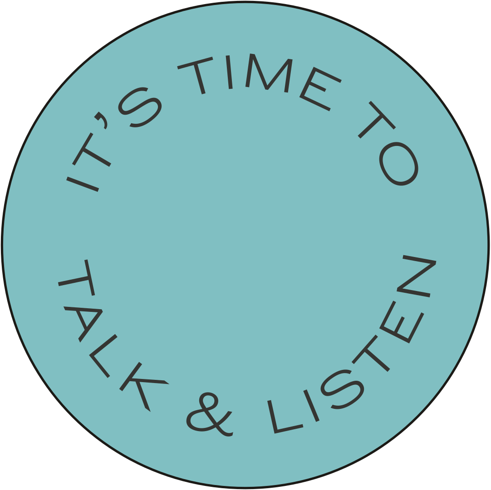
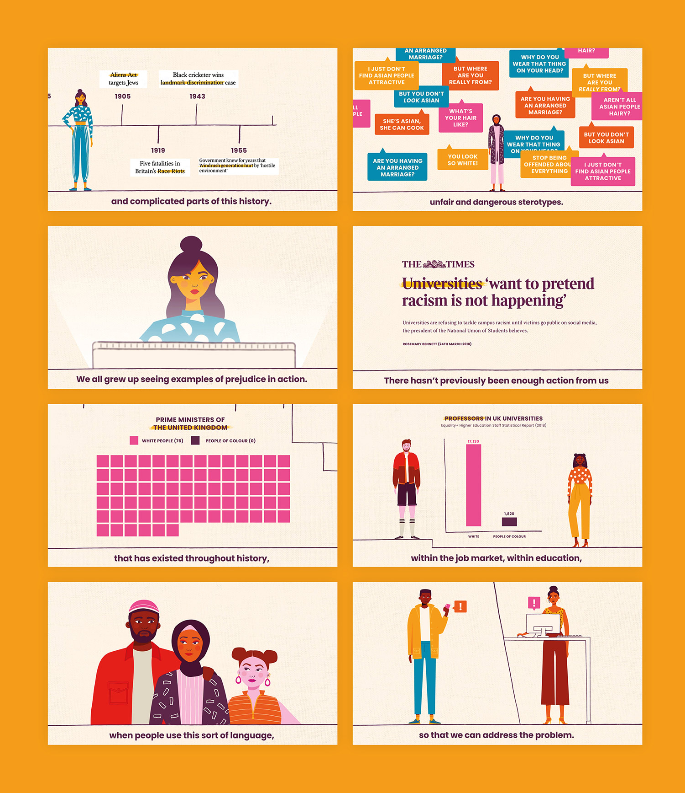
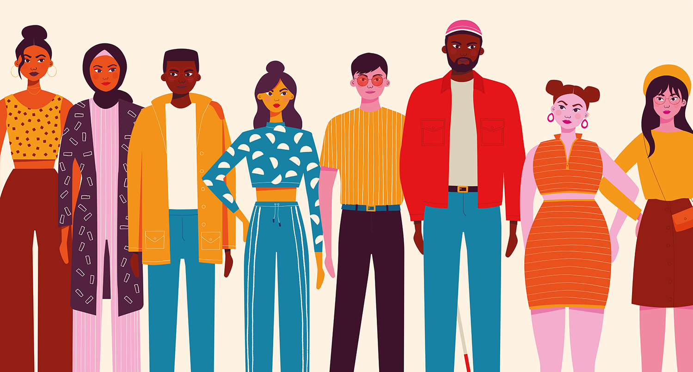

Thinking Differently About Racism.
a print and video campaign confronting racism on campus.
| client | skills used | key words |
| The University of Sheffield | Script Writing / Storyboarding / Illustration / Branding | Anti-racism / Higher Education / Video Production |
| how can we approach racism differently? | one |
|---|---|
| Confronting racism in a genuinely meaningful way requires incredible hard work. It involves confronting the countless failures in our society to tackle the problem at earlier stages: through our education system, media and in Government. As part of The University of Sheffield’s Race Equality Strategy and Action Plan, I had the task of trying to understand why people struggle so much when confronted with hard truths about racism and finding new, accessible ways to explain why racism happens and how we can tackle it. | |
| how can we approach racism differently? | two |
|---|---|
| We decided that a carefully considered video and print campaign in conjunction with a series of informational lectures and workshops would create an accessible but robust introduction to a wider strategy of anti-racism across the University. | |


82.2% of students are now more confident in challenging racism.
| measuring our impact | one |
|---|---|
| The finished video was shown to all incoming First Year students in compulsory welcome lectures (around 16,000 students), with an additional viewership of over 19,000 across social media platforms. We received tonnes of meaningful engagement — direct feedback from students, staff and those outside the University who watched the video and engaged in the the wider campaign, as well as comments, shares and reactions online. | |
| measuring our impact | two |
|---|---|
| The impact of the video, in combination with the rest of the programme we developed, is clear: 88.4% of students reported now understanding their role in helping to achieve the goals of the University's Race Equality Strategy. 97.3% are clear that the University does not tolerate racism, discrimination and prejudice, 85% are more confident about their understanding of racism and microaggression and 82.2% are more confident about challenging racism, discrimination and prejudice. | |

| more changes to come | one |
|---|---|
| This project is part of an extended body of work focusing on anti-racism that I have created at the University of Sheffield. As well as completing work as part of my membership of the University's Anti-Racism Working Group and Anti-Racism Communication and Engagement Group, I have independently pushed for further, more radical change, summarised in a proposal you can read here. | |